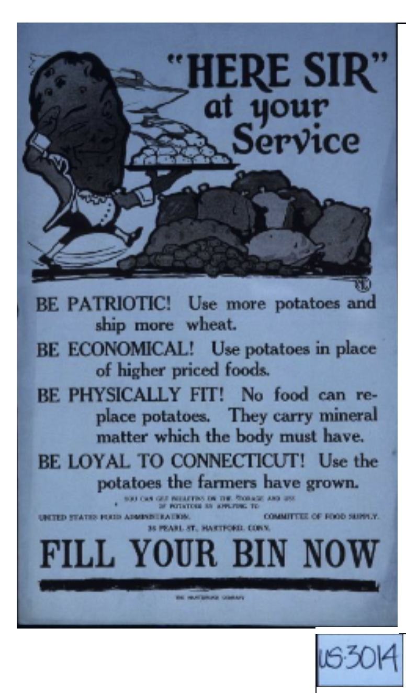

This image is a poster from around 1917-1918, which depicts a World War I era propaganda poster. The poster encourages the viewer, assumed to be citizens, to eat more potatoes, a crop that is very easy to grow and useful during times of war. This poster relates eating potatoes with patriotism, and therefore puts the focus on teh propaganda on the government that created it. This, however, ignores the regular experiences of people who were in the domestic United States during WWI. This can be used to create a worldview of which the strength of government and a popular rally around a certain cause are beneficial, which can then influence government policy towards consolidating power.
Back